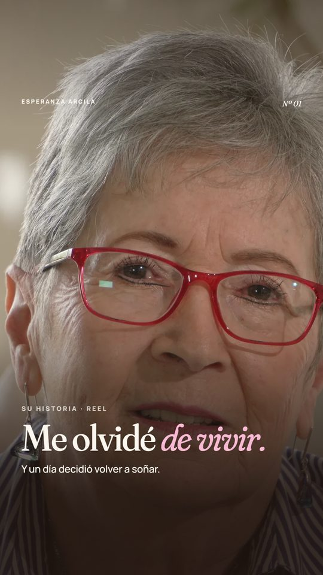
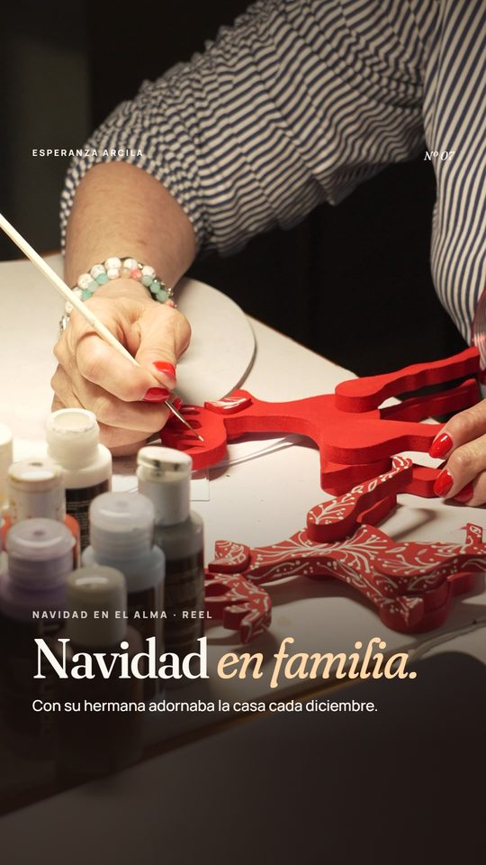
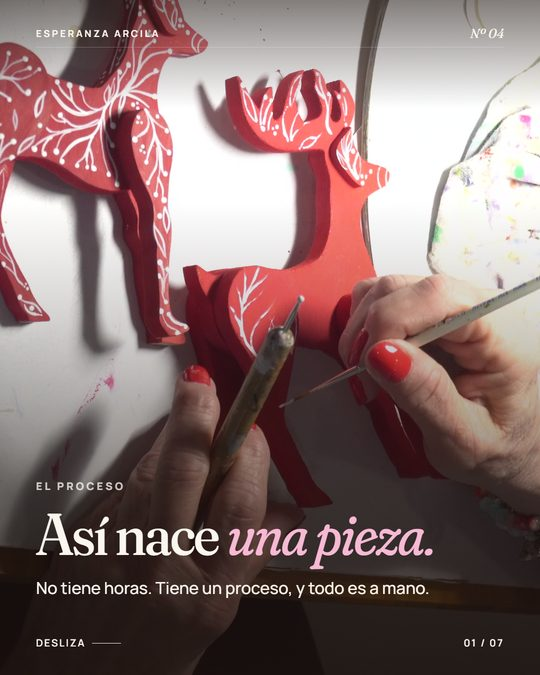
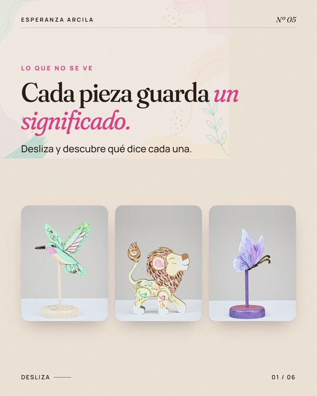
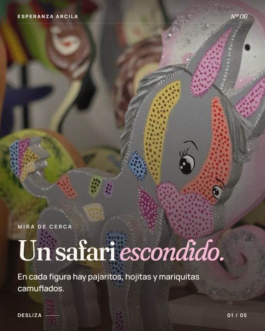

En una semana, más de 8.600 personas vieron los anuncios con tu historia y 500 entraron a la tienda a mirar tus piezas. Eso es muy buen resultado para el dinero invertido.
Lo que todavía no vemos es la compra en la página web: la tienda en línea no ha registrado pagos desde que empezaron los anuncios. Por WhatsApp escribieron 22 personas; se les envió a la página y tampoco compraron.
Por eso proponemos cambiar el dinero hacia lo que mejor funciona (la tienda) y empezar ya a volver a mostrarles tus obras a quienes ya las vieron.

El Reel Me olvidé de vivir lleva a las personas directo a esperanzaarcila.com. 9 de cada 100 personas que lo ven hacen clic; lo normal en Meta es 1 o 2. La historia de Esperanza conecta.
Gastado: $34.955 de $180.000.
El mismo Reel, pero con botón para escribir por WhatsApp. Meta registra 17 conversaciones y Esperanza confirma que 22 personas escribieron preguntando por las piezas. A todas se les respondió enviándolas a la página web, y ninguna terminó comprando: el paso de WhatsApp a la web es donde se pierde la venta. Cada conversación cuesta $3.618, 50 veces más que una visita a la tienda, y obliga a responder chats uno por uno.
Gastado: $61.511 de $360.000. Es la campaña con más presupuesto y la que menos rinde.

Anuncio Navidad · Elige la tuya que se muestra solo a quienes ya visitaron la tienda. Hoy ya hay 500 visitantes a quienes recordarles las piezas antes del cierre de pedidos navideños (16 de diciembre).
Presupuesto: $60.000. Aún no ha gastado.
| Anuncio | Gasto | Alcance | Frecuencia | Costo por mil | Clics | % clics | Resultado | Costo c/u |
|---|---|---|---|---|---|---|---|---|
| C2 · Tienda | $34.955 | 5.732 | 1,21 | $5.034 | 633 | 9,12 % | 500 visitas | $70 |
| C1 · WhatsApp | $61.511 | 2.949 | 1,26 | $16.584 | 49 | 1,32 % | 17 chats | $3.618 |
| C3 · Remarketing | $0 | — | — | — | — | — | desde 1 dic | — |
| Total | $96.466 | 8.681* | 682 |
* Suma de las dos campañas; una misma persona pudo ver ambas. Fuente: Administrador de anuncios de Meta, cuenta CP Artify, 18–25 nov 2026.
El pixel de Meta registra cada paso que hace un visitante en esperanzaarcila.com. Últimas cuatro semanas (29 oct – 25 nov):
La única compra registrada es del 15 de noviembre, antes de que empezaran los anuncios. El 22 de noviembre We Rock hizo una prueba completa hasta la página de pago (sin pagar): el carrito, el botón de pago y Wompi funcionan bien, así que la tienda no está rota. Verificado también en el sistema de pedidos de la tienda el 26 de noviembre: no hay pedidos desde el 18 de noviembre (los únicos 3 pedidos del historial son pruebas internas, canceladas).
Qué significa: mucha gente mira, pocos agregan al carrito y nadie ha pagado en línea todavía. Para un regalo de $45.000 a $190.000 es normal que la gente lo piense; por eso es clave recordarles las piezas (remarketing) y quitar dudas: costo de envío, tiempos de entrega y fecha límite para Navidad.
El plan eran 12 publicaciones entre el 17 de noviembre y el 8 de diciembre. Se publicaron las 3 primeras (17 nov) y las siguientes quedaron sin salir. El perfil tiene hoy 22 seguidores.



Desde hoy retomamos con dos publicaciones por semana y dejamos programadas las nueve que faltan, priorizando las de Navidad antes del cierre de pedidos del 16 de diciembre.
Pendiente en el perfil: la biografía aún muestra la dirección de la casa y el enlace antiguo (w.app/artifyart). Proponemos quitar la dirección y enlazar esperanzaarcila.com.
Además de las visitas y los chats, los anuncios generaron conversación pública. Esto es lo que la gente respondió (18–25 nov):
| Publicación | Reacciones | Comentarios | Compartidos | Guardados |
|---|---|---|---|---|
| Anuncio C1 · WhatsApp (Facebook + Instagram) | 134 | 16 | 9 | 3 |
| Anuncio C2 · Tienda (Facebook + Instagram) | 62 | 4 | 4 | — |
| Reel orgánico en Facebook e Instagram | — | 4 | — | — |
| Total | 196 | 24 | 13 | 3 |
Fuente: Administrador de anuncios (columnas de interacción) y bandeja de comentarios de Meta Business Suite. La página sumó 3 "Me gusta" nuevos desde los anuncios; en Instagram, el anuncio de WhatsApp tiene 29 "Me gusta".
Qué nos dicen los comentarios: la historia de Esperanza emociona y genera mucho cariño, sobre todo en personas de su generación. Pero casi nadie habla de las piezas. El anuncio logra que la quieran a ella; ahora necesitamos que quieran una pieza en particular, con precio y para regalar esta Navidad.
Diagnóstico: la gente llega (500 visitas, 22 chats, 24 comentarios), pero la compra se pierde en tres puntos: los anuncios no muestran precio, en WhatsApp se envía a la gente a "mirar la página" en vez de a la pieza exacta, y las preguntas públicas no se contestan.
| Acción concreta | Quién | Cuándo |
|---|---|---|
| Contestar hoy la pregunta de precio en el anuncio, con el precio y el enlace directo a las piezas. De ahora en adelante, toda pregunta pública se responde el mismo día. | We Rock | 26 nov |
| Pausar la campaña de WhatsApp y pasar su saldo (~$298.000) a la tienda y al remarketing. | We Rock, con OK de Esperanza | 27 nov |
| Encender ya el remarketing para las 500 personas que visitaron la tienda y quienes vieron el Reel, con el anuncio de Navidad. | We Rock | 27 nov |
| Nuevo anuncio de producto: carrusel con 5 piezas más vendibles, cada una con su precio y botón "Comprar", con el mensaje "Regalos pintados a mano · pide antes del 16 de diciembre". | We Rock | 28 nov |
| Respuestas listas para WhatsApp: por cada pieza, el precio y el enlace directo para pagar ("Esta pieza cuesta $___. Aquí la compras en dos minutos con tarjeta, PSE o Nequi"). Más un mensaje automático de bienvenida. | We Rock prepara · Esperanza usa | 28 nov |
| Definir un incentivo de Navidad con fecha límite: envío gratis o empaque de regalo hasta el 16 de diciembre. | Esperanza decide | 28 nov |
| Mostrar en cada pieza el costo de envío y la fecha límite de Navidad. Corregir el precio de la Libreta Colibrí en Google ($45.000 vs $55.000 en la página). | We Rock | 30 nov |
| Instagram al día: publicar el contenido pendiente, dos publicaciones por semana. Quitar la dirección de la biografía y del texto del post "Esta es Esperanza" (aún muestra el WhatsApp personal), y enlazar esperanzaarcila.com. | We Rock | desde 26 nov |
Quedan $503.534 de pauta hasta el 18 de diciembre. Llevándolos a la tienda, al costo actual de $70 por visita, son unas 6.000 a 7.000 visitas más, y el remarketing les vuelve a mostrar las piezas a quienes ya las vieron.
No podemos prometer un número de ventas, pero sí fijar cómo lo vamos a medir: en el próximo corte (3 de diciembre) revisamos pedidos, carritos y chats. Si con los precios visibles, el remarketing y el incentivo de Navidad siguen sin aparecer compras, el problema ya no es de anuncios sino de oferta (precio, envío o tipo de pieza), y lo ajustamos con Esperanza antes del cierre del 16 de diciembre.